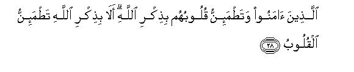

بسم الله الرحمن الرحيم
Sayyid Abul Ala Maududi - Tafhim al-Qur'an - The Meaning of the Qur'an
 13.
Surah Ar Ra'ad (The Thunder)
13.
Surah Ar Ra'ad (The Thunder)
This Surah takes its name from the word (ar-Ra'ad) (thunder) that occurs in v. 13. It is merely the symbolic name of the Surah and does not in any way mean that the Surah deals with the scientific problems connected with thunder.
The internal evidence (vv. 27-31 and vv. 34-48) shows that this Surah was revealed in the last stage of the Mission of the Holy Prophet at Makkah and during the same period in which Surahs Yunus, Hud and Al- A'araf were sent down. The manner of speech indicates that a long time had passed since the Holy Prophet had been conveying the Message. On the one hand, his opponents had been contriving different devices to defeat him and his Mission, and, on the other, his followers had been expressing a desire that by showing a miracle the disbelievers might be brought to the Right Way. In answer, Allah impressed on the Believers that it is not His way to convert people by this method and that they should not lose heart, if He is giving the enemies of the Truth a rope long enough to hang themselves. Otherwise, He is able to show such signs as may bring the dead out of their graves and make them speak (v. 31), but even then these obdurate people will invent an excuse to explain this away. All this decisive evidence clearly proves that this Surah was revealed during the last stage of the Prophet's Mission at Makkah.
The first verse enunciates the main theme of this Surah, that is, "The Message of Muhammad (Allah's peace be upon him) is the very Truth, but it is the fault of the people that they are rejecting it." This is the pivot on which the whole Surah turns. This is why it has been shown over and over again in different ways that the basic components of the Message -- Tauhid, Resurrection and Prophethood-are a reality: therefore they should believe sincerely in these for their own moral and spiritual good. They have been warned that they shall incur their own ruin if they reject them, for kufr by itself is sheer folly and ignorance. Moreover, the aim of the Surah is not merely to satisfy the minds but also to appeal to the hearts to accept the Faith. Therefore it does not merely put forward logical arguments in support of the truth of the Message and against the people's wrong notions, but at appropriate intervals it makes frequent use of sympathetic and earnest appeals to win over their hearts by warning them of the consequences of kufr and by holding out the happy rewards of Faith so that the foolish people should give up their obduracy.
Besides this, the objections of the opponents have been answered without any mention of them, and those doubts which are proving a hindrance in the way of the Message or were being created by the opponents have been removed. At the same time, the Believers; who had been passing through long and hard ordeal and were feeling tired, and waiting anxiously for Allah's succor, have been comforted and filled with hope and courage.

In the name of Allah, the Compassionate, the Merciful.
[1] Alif. Lam. Mim. Ra. These are the verses of the Divine Book, and that which has been sent down to you from your Lord is the very truth, but most (of your) people do not believe in this.1
[2] It is Allah Who raised up the heavens without such pillars as you could see:2 then He sat Himself upon the Throne of His Kingdom:3 He subjected the sun and the moon to a law.4 Everything in the universe is running its course to its fixed term.5 And Allah alone is directing the whole affair. He makes His signs plain:6 perhaps you may be convinced of meeting your Lord.7
[3] And it is He Who has spread out the earth, and fixed the immovable mountains in it, and made the rivers flow on it. He has created in pairs every kind of fruit, and He covers the day with the veil of night.8 Surely there are great Signs in these for those who reflect upon them.
[4] And behold! there are different regions on the earth close to one another;9 there are vineyards, corn fields and groves of date-palm with single or double trunk.10 All are irrigated with the same water, but We make some more tasteful than others. Most surely there are many Signs in all these things for those who use their common sense.11
[5] Now, if there is anything for you to marvel at, you should marvel at their saying: "What! when we have become dust, shall we then be raised to a new life again?" These are the people who have denied their Lord:12 they are those who shall have collars around their necks:13 they shall be the dwellers of Hell and therein they shall dwell for ever.
[6] They demand from you the hastening of evil rather than good,14 though indeed there have been instances of exemplary punishments before them (of the wrath of God on the people who adopted the same attitude.) The fact is that your Lord shows forbearance to the people despite their transgressions, and it is also the fact that your Lord is stern in retribution.
[7] These people who have rejected your Message, say, "Why has no Sign been sent down to this person from His Lord"15 You are a warner only and every people has its guide.16
[8-11] Allah knows what every female bears in her womb: He is fully aware of what is taking shape in the womb and also what decrease or increase occurs therein.17 Everything has its fixed measure with Him. He has perfect knowledge both of the visible and the invisible. He is the Great and the Supreme Being. Alike to Him are all of you, whether One of you whispers or speaks aloud or one hides oneself under the cover of the darkness of night or walks about in the broad day light. For each person has guardians before him and behind him, who watch over him by Allah's command.18 The fact is that Allah does not change a people's lot unless they themselves change their own characteristics: and when Allah decides to bring about retribution to a people, none can ward it off, nor can they find any defender or helper against Allah.19

[12-13] It is He Who makes the lightning flash before you to fill you both with fear and with hope: it is He Who produces clouds laden with water. The thunder glorifies Him with His praise20 and the angels, too, glorify Him in awe of Him.21 He lets loose thunderbolts and (often) smites with them whomsoever He wills, while they are wrangling about Allah. The fact is that His plan is very effective.22
[14-15] To invoke Him alone is the right thing.23 As regards the other deities whom they invoke apart from Him, they cannot give any answer to their prayers. It is as if a man were to stretch his hands towards water and ask it to come to his mouth, when it cannot reach his mouth in this way; likewise the prayers of the disbelievers are nothing but aimless efforts. For it is Allah alone before Whom everything in the heavens and the earth bows down willingly or unwillingly,24 and the shadows of all things bow down before Him in the morning and the evening.25
[16] Ask them, "Who is the Lord of the heavens and the earth ?" Say, "Allah."26 Then say to them, "When this is the fact, have you then made beside Him such deities your protectors as can do neither good nor harm even to themselves ?" Say, "Are the blind man and the seeing man alike?27 Are light and darkness alike?"28 And if it is not so, have the partners, they have set up with Allah, created anything like His creation so as to make the matter of creation doubtful for them?29 Say, Allah alone is the Creator of everything; and He is the Unique, the Almighty. 30
[17] Allah sent down water from the sky and every system carried it along according to its capacity: then there was flood and a swelling foam31 came to the surface. Likewise there arises a scum out of the metals which are melted in the furnace for making ornaments and utensils.32 By such similitudes, Allah makes the truth distinct from falsehood. That which is the foam vanishes and that which is beneficial for the people remains on the earth. In this way Allah cites similes to make His Message clear.
[18] There is an excellent reward for those who responded to the call of their Lord. As for those who rejected His call, they would willingly give for their ransom all the wealth the earth contained, if they possessed it, and as much more besides (in order to escape retribution).33 Those are the people who shall have the heavy reckoning;34 their abode shall be Hell-a wretched resting place.
[19-21] Well, how can the one who believes that this Book which has been sent down to you from your Lord, is the Truth, be like the one who is blind to this fact?35 It is the wise people alone who take advice from this:36 they fulfill their Covenant with Allah, and break it not after confirming it.37 They join together what Allah has bidden to join:38 they fear their Lord and dread lest they should be called upon to render a heavy reckoning.
[22-25] They show fortitude to win the approval of their Lord.39 They establish Salat and expend openly and secretly out of what We have bestowed upon them and ward off evil with good.40 Their's shall be the abode of the Hereafter: Gardens wherein they will live for ever. They will enter into them along with the righteous from among their forefathers, wives and descendants. The angels will come to welcome them from every side, saying, "Peace be upon you.41 You have won this blessing because of what you steadfastly endured in the world." How blessed is this abode of the Hereafter! As for those who break their Covenant with Allah after confirming it, who cut asunder what Allah has bidden to be joined, and spread chaos on the earth, their's shall be the curse, and they shall have a wretched abode in the Hereafter.
[26] Allah gives abundantly His provisions to whom He will and sparingly to whom He pleases.42 These people are wholly absorbed in the joys of this life, whereas the life of this world is but a paltry thing as compared with the life of the Hereafter.

[27-29] Those people who have rejected (Muhammad as a Prophet) say, "Why has no Sign been sent down to him from his Lord?43 Say, "Allah leads astray whom He will; and He leads to Himself only those who turn to Him."44 Such are the people who have accepted (the Message of this Prophet,) and their hearts find comfort in the remembrance of Allah. Note it well that it is Allah's remembrance alone that brings comfort to hearts. Blessed are those who have accepted the Message and done righteous deeds: they have a good end.
[30] O Muhammad ! We have sent you as a Messenger in this way45 among a people before whom many peoples have passed away so that you should recite to them the Message which We have sent down to you; yet they are rejecting the most Compassionate Lord.46 Say to them, "My Lord is He: there is no deity but He: I have placed my full trust in Him and He is my sole Resort."
[31-32] And what (do you think) would have been the result, if We had sent a Qur'an that would have caused the mountains to move or cleft the earth asunder or made the dead speak?47 (It is not difficult at all to show such Signs) for Allah has full power over everything.48 Have the Believers (still any expectations of a Sign in answer to the demand of the disbelievers and) not given up all hope, (knowing) that Allah could have guided all mankind aright,49 if He had so desired? As for the disbelievers, because of their misdeeds, one affliction or the other does not cease to visit them every now and then, or come near their home. It will go on like this until Allah's threat come to pass. Indeed, Allah does not fail to bring about His threat. Other Messengers have also been mocked before you, but I have always given respite to the disbelievers and then seized upon them at its end. Just see how terrible had been My Scourge!

[33-35] What! are they (so audacious that they are) setting up partners with Him Who is watching minutely over the actions of each and every soul?50 51 O Prophet say to them, "(If God has Himself set them up as His partners) just tell me their names. Do you mean to inform Him of something new that He Himself is unaware of on His earth? Or do you merely utter empty words?52 Indeed for those who rejected the Message their fraud53 has been made to appear fair to them and they have been debarred froth the Right Way:54 and there is none to show the Right Way to those whom Allah lets go astray. There is a torment for them in the life of this world but the torment in the Hereafter is still more painful; and there is none to protect them from Allah. As regards the Paradise which the God fearing have been promised it is like this: canals flow beneath it, its fruits are eternal and its shade is perpetual. Such is the reward of the righteous but the reward of the disbelievers is the tire of Hell.
[36-37] O Prophet! some of those people whom We gave the Book before you rejoice in the Book We have sent down to you while there are others among the different sections who reject some of the things contained in this. Tell them plainly "I have been commanded to worship Allah alone and prohibited from setting up a partner with him. Therefore I invite you to Him and myself turn to Him."55 It is with this instruction that We have sent this Command in Arabic to you. Now if you follow the desires and lusts of the people in spite of the knowledge you have received there shall be none to defend you nor to protect you against Allah.

[38-39] We have sent many Messengers before you and We assigned to them also wives and children:56 and no Messenger had the power to show any Sign without the sanction of Allah.57 Every age had its Book: Allah abrogates whatever He pleases and keeps intact whatever He wills and He has the Original Book58 with Him.
[40-42] And O Prophet! Rest assured that We will carry out the threat We are holding out to them whether a part of it should happen during your lifetime or We should cause you to die before its fulfillment. Anyhow your duty is only to convey the Message and it is for Us to do the reckoning.59 Do these people not see how We are advancing in the land and shrinking its boundaries (for them) on all sides ?60 Allah rules and there is none to revise His decrees and He is swift at His reckoning. Indeed those who went before them also devised schemes,61 but the decisive plan is wholly in the hand of Allah. He knows what every soul earns and the disbelievers will soon come to know who will have a good end.
[43] These disbelievers say, “You are not a Messenger of Allah.” Say, “Allah suffices for a witness between me and you, and every such person who has the knowledge of the Book.”62
1This is the introduction to this Surah, in which its aim and object has been enunciated in a few words. Allah has addressed the Holy Prophet to this effect: "O Prophet! most of your people arc rejecting the teachings of the Qur'an for one reason or the other, but the fact is that what We are sending down to you is the Truth whether people believe it or not."
After this brief introduction, the discourse deals with the main subject of the Surah, which consists of three basic things. First, "The whole of the universe belongs to Allah alone, and none besides Him has any right to service and worship" . Second, "There is another life after this life, in which you shall have to render an account of all your actions." Third, "I am a Messenger of Allah: whatever I am presenting before you is not from myself but from Allah." As the people were rejecting these three things, these have been reiterated over and over again in various forms to remove doubts and objections from the minds of the disbelievers.
2In other words, "Allah keeps the myriads of heavenly bodies in space without any visible and perceptible support." Though there is nothing apparent and visible that is supporting these bodies, yet there is an invariable and imperceptible Power which is not only holding and keeping each and everyone of these huge bodies including the earth we inhabit in their proper places and orbits but also does not let any collision take place between them.
3For the fuller details of "He sat Himself on the Throne of His Kingdom," please refer to E.N. 41 of Al-Aaraf. Here the purpose will be served if it is understood that this thing has been mentioned in the Qur'an at many places in order to bring out clearly the fact that Allah has not only created the earth, but also rules over His Kingdom, and that His universe is a factory that is not working automatically as some ignorant people seem to think nor is it being ruled by many gods as other ignorant people seem to believe. But it is a regular system that is being run and ruled over by its Creator.
4It should be noted here that the addressees themselves accepted the truth of all the claims that have been made in this verse. Therefore no proofs were required of the facts that it is Allah Who raised up the heavens without any visible support and subjected the sun and the moon to a fixed order. These things have been mentioned here only as arguments to prove that Allah is the sole Sovereign and ruler of the whole universe.
Now let us consider this question: How can such an argument as this convince those who do not believe at all in the existence of God nor acknowledge that He is the Creator of the universe and the Director of all its affairs ? The answer is that the arguments in support of the Doctrine of Tauhid advanced in the Qur'an to convince the mushriks equally apply against the atheists to prove the existence of God. It is like this: The whole of the universe-the earth, the moon, the sun and the countless heavenly bodies-constitute a perfect system which is working, under the same all-powerful Law. This is a proof that such a system must have been designed by some All-Powerful Sovereign, Who possesses wisdom and unerring knowledge. This proves conclusively the existence of that Allah Who has no other equal nor associate nor partner. For there can be no system without an administrator, no law without a ruler, no wisdom without a sage, and no knowledge without the possessor of that knowledge. Above all, no one can ever conceive that there can be any creation without a Creator except the one who is obdurate or has no sense left in him at all.
5This system is not only a standing proof of the fact that an All-Powerful Sovereign is ruling over it, but is also an evidence of the great wisdom underlying it; it also bears witness that there is nothing ever-lasting in it. Everything in it remains for a fixed term after which it comes to an end. This is equally true for each and every component part of it as well as for the whole system. It is quite evident from its physical structure that there is nothing ever-lasting and immortal. There must be some fixed term for the system as a whole, after the expiry of which it shall come to an end. Then there shall be another world: therefore it is most likely that there shall be Resurrection as predicted in the Qur'an: nay, its inevitability is beyond any doubt.
6Allah makes plain those Signs which help prove the truth of what the Holy Prophet was informing them. These Signs are spread all over the universe and everyone who observes these with open eyes can perceive that the realities towards which the Qur'an invites the people are testified by these Signs.
7The preceding Signs have been cited to prove two things. First, the universe has only one Creator and Administrator. Second, there shall be life in the Hereafter in which everyone shall be judged in the Divine Court and awarded rewards and punishments on merit. As the first thing was quite obvious, it has not been mentioned in the conclusion drawn from the Signs. But the second thing, life in the Hereafter, has been mentioned because that was rather hidden from perception. Therefore it has specifically been stated that these Signs have been made plain in order "to convince you that you shall meet your Lord in the Hereafter and render an account of all your actions in this world."
Now let us consider how these Signs help prove life in the Hereafter. These make it evident in two ways:
(1) When we consider how big heavenly bodies as the sun and the moon are completely subject to the will of Allah, our hearts feel convinced that Allah Who has created these things and regulated their movements so orderly around their orbits, has undoubtedly the power to bring to life the whole human race after its death.
(2) The terrestrial system also proves that its Creator is All-Wise. Therefore it can never be imagined that the All-Wise Creator could have created man and endowed him with wisdom and intelligence and invested him with power and authority, and then left him free to do what he liked with these, without being responsible and accountable for their use or abuse. For His Wisdom demands that He should take full account of all the acts and deeds of man in this world. It requires that. He should take to task those who committed aggressions and compensate their victims and He should give rewards to those who practiced virtue and punishments to those who did wicked deeds. In short, His Wisdom requires that He should call to account every human being and demand: "How did you carry out the trust that was placed in your hands in the shape of your wonderful body with its wonderful faculties and the numerous resources of the earth?" It may be that a foolish and unjust ruler of this world might entrust the affairs of his kingdom in the hands of his agents and then forget to call them to account, but such a thing can never be expected from the All-Wise and All-Knowing Allah.
It is this way of observing and considering the heavenly bodies that can convince us that life in the Hereafter is both possible and inevitable.
8After citing some heavenly Signs in support of the doctrines of Tauhid and the Hereafter, a few Signs are being cited from the earth for the same purpose. Briefly the following are the arguments for Tauhid, Resurrection and Accountability:
(1) Tauhid: The fact that the earth is closely connected with the heavenly bodies (which help create life on it), and the fact that the mountains and the rivers are so inter-related with that life are clear proofs that all these things have not been created by separate and different gods nor are being governed, by gods with independent powers and authorities. Had it been so, there could not have been so much harmony, congruity, accord and unity of purpose among them; nor could these relationships have continued for such a long time. For it is quite obvious that if there had not been One All-Powerful and All-Wise Allah, it could not have been possible and practicable for different gods to sit together and evolve out such a harmonious system of the universe without any discord or conflict between its myriads of bodies.
(2) Resurrection: This wonderful planet, the earth, is itself a great proof that its Creator is All-Powerful and can, therefore, raise the dead whenever He will. For it is floating in space round the sun and it has high mountains fixed in it and has large rivers flowing on its surface: it produces countless fruit-bearing trees and it brings about the cycles of the day and the night with precise regularity.
All these things bear witness to the boundless power of its Creator. It would, therefore, be sheer folly to doubt that such All-Powerful Creator is incapable of raising mankind to life after death.
(3) Accountability: The earth, with all its wonderful and purposeful signs, is a clear evidence of the fact that its Creator is All-Wise. Therefore it cannot even be imagined that He has created man, His noblest creation, without any purpose. Just as His wisdom is apparent from the structure of the earth, its mountains, its rivers, the pairs of its trees and fruits, its night and day, so it is quite obvious that it has not been made the habitation of man without any purpose, nor will it be brought to naught without the fulfillment of that purpose. Clearly mankind shall be accountable to its Creator for the fulfillment of that Divine purpose.
9That is, "If you observe carefully, you will find Divine wisdom, design and purpose in the diversity of the structure of the earth. Though it has countless regions adjoining one another, they are different from one another in their shapes, colors, component parts, characteristics, potentialities, productive capacity and source of minerals. This diversity has countless points of wisdom and advantage. Let alone other creatures, if we consider the diversity of regions from the point of the good it has done to mankind, we shall have to acknowledge that this is the result of the well-thought and well-planned design of the All-Wise Creator. For this diversity has helped the growth of human civilization so much that only an unreasonable person can assign this to mere accident.
10Some of the date-palm trees have only a single trunk from the root while others have two or more stems from the same root.
11The things mentioned in this verse contain many other Signs besides the proofs of Tauhid and the boundless powers and All-Comprehensive Wisdom of Allah. Let us consider one of these, that is the diversity in the universe, including mankind. There is the one and the same earth but all its regions are quite different from one another. Then there is one and the same water but it helps to produce different kinds of corn and fruits. Then one and the same tree bears fruits which, in spite of likeness, differ from one another in shapes, sizes, and other features. Then there is one and the same root from which sometimes one and at others two trunks sprout up, with their own different characteristics. If one considers these aspects of diversity, one shall come to the conclusion that the Divine wisdom demands the same kind of diversity in the natures, temperaments and inclinations of human beings, and, therefore, in their conducts. So, one need not worry about the existence of this diversity. As it has been stated in v. 31, if Allah had willed, He could have created all human beings alike and virtuous by birth. But the wisdom that underlies the creation of the universe, including mankind, requires diversity and not uniformity. Otherwise, all this creation would have become meaningless.
12They "have denied their Lord": their denial of the Hereafter is, in fact, the denial of the Power and Wisdom of Allah. As they say that it is impossible to bring them again to life after their death, it implies that, God forbid, their Allah Who has created them lacks not only power but wisdom, too.
13As a collar around the neck is a symbol of imprisonment, the words "collars around their necks" have been used here idiomatically to show that they are slaves of ignorance, obduracy, lust and are blind followers of their forefathers. As their thinking is influenced by their prejudices, they cannot believe in the Hereafter and would deny this, though there is every reason to believe that it is inevitable.
14This refers to the demand of the Quraish from the Holy Prophet "If you are a true Prophet of God, why don't you hasten to bring that scourge of God on us of which you have been threatening us, when we are flouting and denying you ?" They did this in different ways. Sometimes they would invoke God mockingly and say, "O Lord, settle our accounts now and do not postpone these to the Day of Resurrection" . At another time, they would say, "Our Lord, if what Muhammad says be true, and be from Thee, then stone us from the sky or send down some other scourge upon us from the sky or send down some other painful torment upon us." In this verse an answer has been given to such impudent demands of the disbelievers. They have been admonished to refrain from such foolish demands and avail of the respite that was being given to them and mend their ways, for they were incurring the wrath of God by adopting the attitude of rebellion.
15This showed their mentality. The only criterion of judging whether Muhammad (Allah's peace be upon him) was a true Prophet or not according to these disbelievers, was whether he would perform a miracle to order. This was because they would not judge his Message by rational arguments: they would not learn a lesson from his high character nor from the moral revolution that was being brought about among his Companions by his Message and noble example: nor would they carefully consider the rational arguments given in the Qur'an to prove the errors of their religion of shirk and superstitions of ignorance. They would ignore these rational things and demand a miracle to decide the issue.
16This is the concise answer to their demand, though it has not been directly addressed to the disbelievers but to the Messenger. It is this: "O Prophet, you should not worry at all about some miracle which you might show to these people in order to convince them, for it is not a part of your Mission. Your duty is only to warn the people of their negligence and of the evil consequences of their wrong ways. And for this purpose, We have always sent a guide to every people. Now you, too, are performing this duty, and it is for them to open their eyes and judge the truth of your Message." After giving this concise answer, Allah overlooks their demand but warns them, in the succeeding verses, that they have to deal with the All-Knowing Allah Who has full knowledge about everyone of them from the time they were in the wombs of their mothers, and Who keeps a keen watch over everything they do. Therefore their fates shall be decided strictly with justice in accordance with their merits and that there is no power on the earth and in the heavens that can influence in the least His decisions and judgments.
17When amplified the verse will mean : Allah remains fully aware of all the developments that take place in the child while in its mother's womb, and He watches over the decrease or increase in each of its limbs, and its potentialities, capabilities and powers.
18That is, "Allah not only directly watches over whatever each person does, and is fully aware of everything he does, but He has also appointed such Guardians as accompany him everywhere and keep a full record of all his deeds." This has been stated here to warn those people who live their lives under the delusion that they have been left absolutely free to do whatever they like and shall not be required to render an account of what they did in this worldly life. The warning is that such people invite their own retribution.
19This is to warn them further that they should not remain under any delusion that some holy person or saint or angel has the power to rescue them froth Divine Retribution, for there is none who could defend them against Allah, even though they might have been paying homages and making offerings to their so-called patrons and protectors in the hope that they would rescue them froth punishment from Allah on the Day of Judgment.
20The thunder is a proclamation of Tauhid for those who have ears to hear the real meaning of its loud noise which follows the flash of lightning, though it is merely a kind of noise for those who hear it like animals. For it proclaims that Allah Who raises clouds from the oceans and carries them wherever He wills, and makes the lightning flash from the clouds and then turns them into rain so as to supply water to the dwellers of the earth, is perfect and worthy of all praise, is All-Wise and All-Powerful and is flawless in every respect and has do partner whatsoever.
21The mention of the fact that the angels are filled with awe of their Lord, and they proclaim His praise has a special significance here. This is to refute the shirk of the ignorant people who have always worshiped the angels as gods and deities and believed them to be partners with God in His Godhead. It has been stated that they are not partners with Allah but His most obedient servants; so much so that they praise Him and are filled with awe of Him.
22He has countless plans and measures which are so effective and sudden that He can smite any one with any one of them from any side He will. So much so that the intended victim is absolutely unaware of it. This is a proof that those people, who say absurd things about such All-Powerful Being, are absolutely void of sense.
23"To invoke Him alone is the right thing," for Allah alone has the power and the authority to give help and remove difficulties.
24"... everything in the heavens and the earth bows down before Allah" in the same sense that every creation of His has to obey and submit to His Physical Law in every detail. The only difference between the submission of a Believer and an unbeliever is that the former submits to it with a willing heart while the latter is forced to do so against his will, for it is absolutely beyond his power to oppose it.
25"The shadows bow down" in the sense that they fall to the west in the morning and to the cast in the evening and so on. This shows that they, too, have to submit to some Law.
26It will be worth while to note that though the question, "Who is the Lord of the heavens and the earth?" was put to the disbelievers, Allah told the Holy Prophet to answer it himself and say, "Allah". This was because the disbelievers hesitated to answer it one way or the other. They could not say that it was not Allah for they themselves believed that Allah was the Creator of everything. On the other hand, they could not acknowledge this fact in so many words in answer to such question, for, they would, then, have to acknowledge the doctrine of Tauhid for no basis could have been left in favor of shirk. As they realized their weak position, they would not give any answer to such questions. That is why Allah asks His Messenger to put such questions to the disbelievers: "Who is the Creator of the heavens and the earth? Who is the Lord of the Universe? Who sustains you with provisions of life?" When they do not give any answer to such questions, Allah asks His Messenger to say "Allah" in answer. He then proceeds on with this argument: "When Allah does all these things, how do the deities you worship come in?"
27The blind man is the person who cannot see any of the countless signs of the Oneness of Allah, though these lie spread over before him in the universe. On the other hand, the seeing man is the person who can see in every particle of the universe and in every leaf of grass and tree Signs pointing to their Creator. Thus the question that has been posed means: "O disbelievers ! if you are blind to the Signs, why should the one who can see the Signs should behave like a blind man and stumble along like you?"
28Here "light" means the light of the knowledge of the Truth which the Holy Prophet and his followers possessed. In contrast to this, there was the "darkness" of ignorance in which the disbelievers were wandering about. The question that has been posed means to ask this: "Why should those, who have got the `light', extinguish it and wander about in the darkness like you? Well, if you do not know the worth of the `light', you may choose to wander in the darkness, but how can you expect the one who has got the 'light', who appreciates the difference between the light and the darkness, and who is seeing the right way as if in broad daylight, to Dave the light and wander about in the darkness?"
29The question is intended to impress on the disbelievers that there is absolutely no reason why they should practice shirk. When they themselves admit that their gods did not create even an iota in the universe and that they have not even the smallest and most insignificant share in the creation, there remains no ground for them to cherish any doubts about it. Why should, then, their false gods and deities share the rights and powers of the Real Creator?
30The Arabic word (Qah-har) literally means "the one who rules over all by virtue of one's own power, and keeps all under one's complete control."
This fact that "He is the Unique, the Almighty" follows naturally from the preceding fact that "Allah alone is the Creator of everything," for this fact was also acknowledged by the mushriks and was never denied by them. This is so because the Creator of everything should logically be Unique, and every other thing or being must necessarily be His creation. Therefore nothing could be the equal of the Creator or partner in His Being, attributes, powers and rights. Likewise, the Creator must have complete power and control over His Creation.
For it can never be imagined that the Creator would create anything over which He has not full control. Therefore, the one who acknowledges Allah to be the Creator must also acknowledge Him to be the Unique and the All-Powerful. After this, there remains no reason why one should worship any one other than the Creator or invoke some one else for help in resolving one's difficulties and fulfilling one's needs.
31In this simile the Knowledge which had been sent down. by Allah to the Holy Prophet has been likened to the rain from the sky, and the Believers to the streams, rivulets and rivers. Just as the streams etc. , fill themselves with rain-water, each according to its capacity, so his followers gained knowledge from him, each according to his ability. On the other hand, the hue and cry that was raised by the opponents of the Islamic Movement has been likened to the swelling foam etc., that begins to dance about on the surface of flood water, but soon vanishes away.
32As it is but natural that scum should appear on the surface when are melted in the furnace for purification, likewise bad people would come surface and take prominent part in persecuting the good people who are passed through the furnace of persecution for their purification.
33This shows that the disbelievers would be in such a sad plight that they would not hesitate to give their all for their redemption.
34".... they shall have the heavy reckoning": they shall have to bear the full consequences of their evil deeds. No sin, no shortcoming, in short, nothing will be forgiven and no evil shall go unpunished.
We learn from the Qur'an that the rebels of Allah shall have to render a reckoning, whereas there shall be a "light" reckoning from those who have been faithful and obedient to their Lord. In consideration of their loyal services, their cases will be dealt with leniently, and taking their general goodness into account many of their shortcomings will be forgiven.
This is further amplified by a Tradition of the Holy Prophet. Hadrat 'A'ishah relates, "I said, O Messenger of Allah! the most dreadful verse of the Qur'an is this: Whoso shall commit an evil, he shall be punished for it'. (IV :123). The Holy Prophet answered, O `A'ishah! don't you know how Allah clears the accounts of His faithful and obedient servant? Whatever harm or trouble he receives in this world-even so much as the pricking of a thorn-is taken by Allah as atonement for one or the other of his sins. As regards the Hereafter, everyone, who shall be called upon to render an account of any sin, shall be punished for it' . At this Hadrat `A'ishah asked, `Then what is meant by light reckoning in this verse: Whoso shall be given his `Conduct Register' in his right hand, he will render a light reckoning?' (LXXXIV:?-8). The Holy Prophet answered, `This means merely the presentation of his whole conduct, that is, all his deeds-good and bad-shall be presented before Allah but he shall not be called upon to clear the account of all his deeds; for the one who shall be called upon to clear the whole of his account, shall be totally ruined."
The same thing is happening even in this world. A master deals very leniently with his faithful and obedient servant and connives at his minor faults and even forgives his major faults in consideration of his meritorious services. On the other hand, if a servant is proved to be treacherous and dishonest, no consideration is given even to his services, and he is punished both for his minor and for major faults.
35That is, "As the attitude of the two in this world will be different from each other, so shall be their ultimate end in the Hereafter."
36That is, "Those who listen to the Message that has been sent down by Allah, and accept His Messenger, are really very wise people. This is why their conduct in this world is quite different from those foolish people who are blind to its merits: and so is their ultimate end in the Hereafter, as stated in the subsequent verses".
37This Covenant is the same that was made by Allah with the whole of mankind at the beginning of the creation that they would worship Him alone. (Please refer to E.N.'s 134 and 135 of Al-A`araf). As this Covenant has been made with every human being, it has been imbued firmly in human nature. When a human being is born in this world, he, so to say, confines the same Covenant because he owes his creation to the same Allah with Whom he had made that Covenant: then he is brought up by His Providence and fed and nourished with His Provisions, and uses the powers and faculties endowed by Him. AII these things bind him by themselves into a covenant of bondage with his Lord. It is obvious that wise, loyal and faithful people fulfill their Covenant and dare not break it except that they might break it unconsciously and unwillingly.
38That is, "All those social and civil relations that are conducive to the correct and right conduct of collective human life."
39"They show fortitude": they remain self-possessed and keep under control all their desires and lusts and do not transgress the bounds, and they do not yield to temptations to disobey their Lord in order to gain advantages and gratify their desires: nay, they bear with calm courage and endurance losses and afflictions that are inevitable in the obedience of Allah. If we consider the life of a believer from this point of view, we shall find that the whole of his life is the life of endurance and fortitude, for he keeps himself under control in very trying circumstances in this world in the hope of winning the approval of his Lord and in the expectation of gaining permanent benefits in the Hereafter: so he fights with fortitude every temptation to sin.
40That is, "If others do evil to them, they do not do evil in return but do good instead: they do not fight mischief with mischief but with virtue. Howsoever unjust one may be to them, they do justice in every case. Likewise, they remain truthful and honest even in the cast of those who tell lies against them and show dishonesty towards them."
There is a Tradition of the Holy Prophet to the same effect: "You should not imitate others in your conduct towards other people, for it is wrong to say, 'We will do goodness to others, if they do goodness to us and we will do injustice to them if they are unjust to us.' (On the other hand,) you should follow this principle: if others do goodness to you, you should do goodness to them, but if they do evil to you, you should not be unjust to them."
There is another Tradition, which begins with the words: "My Lord has bidden me to do nine things. Four of these things are, I should behave justly towards everyone whether I am pleased or offended with him. I should render the right even of the one who violates my rights. I should pay the dues even of the one who depraves me of my due. I should forgive the one who has been unjust to me." There is yet another Tradition to the same effect: "Don't be faithless even to the one who has been faithless to you." There is also a saying of Hadrat 'Umar that amounts to the same thing. "The best way of punishing the one, who does not fear God in his dealings with you, is that you should fear God in your dealings with him."
41This implies two things. The angels will come in large numbers from every side and give them this good news: "Now you have come to a place where there is peace for you. Here you arc immune from every affliction, every trouble, every hardship, and every danger and worry." (For details please see E.N. 29 of Al-Hijr).
42This verse refutes the wrong criterion by which the disbelievers of Makkah (and all other foolish people of the world) judged whether one was or was not a favorite of God. They judged a man's worth by his wealth and worldly prosperity and not by his faith and righteous conduct. They thought that the one who was enjoying all the good things of life was a favorite of God, even if he had erroneous beliefs and did wicked deeds. On the other hand, they considered the one who was poor and indigent to be under the wrath of God, even though he was righteous. That is why in their judgment the chiefs of the Quraish were far superior to the followers of the Holy Prophet. They would say, "You can see for yourselves that God is with the chiefs of the Quraish."
In this verse, Allah has warned there that they are absolutely wrong in drawing such a conclusion from the worldly conditions of the people. Allah gives His provision to the people abundantly or sparingly for reasons different from those which they presumed and richness or poverty is no criterion by which to judge the worth of people. The real criterion of judging the worth of people is their beliefs and deeds. The one, who has righteous beliefs and does good deeds, shall be higher in rank than the one who has wrong beliefs and does evil deeds. Thus the real criterion is the quality of one's deeds and not the possession or the lack of wealth.
43Please also keep in view the answer that has been given to this question in v.7.
44This is the answer to their question. It is not due to the lack of signs that they were going astray, but it is the lack of any desire in them to seek right guidance. For Allah does not force one to follow the Right Way, if he deliberately turns away from it. He lets such persons wander on the wrong ways they choose to wander. Nay, even all those things that should serve as a means to guidance for a seeker of truth, become the means of deviation for the one who seeks deviation. So much so that that very torch which helps show the way to the former, dazzles the eyes of the latter. This is how Allah Leads astray a person.
This answer to the demand of a Sign is matchless in its eloquence. It says to them, "O foolish people! it is not due to the lack of Signs that you are not finding the right path, but it is due to the lack of any desire in you for it. You do not see any of the countless Signs that lie scattered all around you because you have no desire to go to the Right Way. How can then any Sign be helpful to you ? For you would not see any of those Signs. However, those who seek the Right Way to Allah, see these Signs and find the Right Way with their help."
45That is, In this way that We have not given you a Sign they demanded.
46That is, "Instead of serving that most Compassionate Lord, they are discarding His service and setting up other partners in His attributes, powers, rights and giving thanks to others for His blessings."
47This verse has been addressed to the Believers who were feeling uneasy that no such Sign was being sent as was demanded by the disbelievers. They thought that such a Sign would convince the disbelievers and they would accept Islam. Therefore when no such Sign was sent, they became all the more uneasy for the lack of the fulfillment of the demand that gave rise to doubts about the Prophethood of the Messenger. The question posed in this verse is meant to remove that uneasiness of the Muslims. It is like this: "Do you think that they would have embraced Islam if such and such Signs had been shown to them all of a sudden along with a Surah of the Qur'an ? Are you under the delusion that they are quite ready to accept Islam and are waiting only for such a Sign ? Do you think that those people who have failed to see the light of the Truth in the teachings of the Qur'an, in the phenomena of the universe, in the pure and spotless life of the Holy Prophet and in the wonderful change in the lives of his Companions, would see the light of the Truth in the moving of the mountains, in the cleavage of the earth and in the coming out of the dead from the graves?"
48"Allah has full power over everything" and can show any Sign if He so desires. He is not showing any Sign for it does not fit in the scheme laid down for the guidance of Man. As the real object is to show Guidance to mankind through the Prophet and not to compel them to believe in the Prophethood of a Prophet, He desires that the people should gain guidance by thinking and observing wisely and not by seeing Signs.
49That is, "If the object had been to make human beings Believers even without consciously understanding it, Allah could have created them Believers by birth."
50That is, "They are so audacious that they set up partners with Allah Whose knowledge is All-Comprehensive and Who is aware of even the minutest details of the good and bad actions of each individual."
51These are the audacious things they do. They ascribe partners and equals to Him: they believe that some of His creatures are a part and parcel of His Being, and have attributes and rights like Him: they presume that they shall not be called to account for whatever they do, even though they live in His Kingdom.
52That is, "You give empty names to the partners you ascribe to Him for you have no real knowledge about them." For you could get this knowledge only in one of the three following ways:
First, You might have received some authentic information that Allah had made such and such people as His partners in His attributes, powers and rights. If it is so, please let us also know their names and the source of your information.
The second possibility is that Allah might have remained ignorant that some beings have become His partners. Therefore you are going to inform Him about this. If it is so, please say it clearly in so many words so that it may be decided whether there are some foolish people who can believe in such a nonsensical claim.
Obviously the above two suppositions are absurd. Therefore the only alternative is that, "You are ascribing partners to Him without any rhyme or reason, and you without any knowledge make one the relative of God, another the hearer of supplications, and still another the helper and fulfiller of certain needs and the ruler of a certain region etc."
53Shirk has been called "fraud" because none of the angels, spirits, saints, heavenly bodies, to whom they ascribe Divine attributes and powers or render Divine rights, ever claimed to possess these attributes or powers, nor did they ever demand these rights from the people nor told the people that they would fulfill their desires and wants, if they would perform some rituals of worship before them. As a matter of fact, some clever people invented these gods in order to practice willful deception and dishonesty so that they might wield powerful influence over the common people and exploit them and deprive them of a part of their hard earned possessions. Accordingly, they made the common people credulous followers of the gods of their inventions and set themselves up as their representatives to get money, etc.., from them by this fraud.
The second reason why shirk has been called "fraud" is that a worldly man pretends to believe in it not because he wants to believe in it but in order to free himself from all moral restraints to enable him to lead an irresponsible life of treed and lust.
The third reason is given below in E. N . 54.
54Shirk is also `fraud' in the sense that it has been made to appear fair for them and so leads them into deviation and prevents them from coming back to the Right Way. It is like this: When mushriks adopt wrong ways of deviation that suit the kind of lives they wish to lead, they have to invent arguments to pacify their consciences and convince other people that they are on the right way. Naturally this fraud confirms them on the way of deviation and they are debarred from the Right Way.
55This is in reply to a specific objection which was then raised by the disbelievers. They would say, "If he has brought the same Message that was brought by the Messengers before him (as he claims). why don't the Jews and the Christians who are the followers of the former Prophets come forward and welcome it?" The verse answers the objection and says that the taste followers of the former Prophets really rejoice in the Message of the Qur'an, but the false ones have been offended at it. Then it asks the Holy Prophet not to worry at all about this, saying, "O Prophet, you should not mind at all whether they are pleased or offended at it. Tell them plainly that this is the Guidance I have received from my Lord and I will follow it at all costs."
56This is the answer to another objection. The disbelievers said that Ire could not be a Prophet of Allah because he had wives and children, for they argued that Prophets had nothing to do with carnal desires.
57This is the answer to yet another objection: "Had he been a taste Prophet, he would have shown a Sign like the shining hand and the miraculous staff of Prophet Moses or he would have restored sight to the blind or cured lepers like Prophet Jesus, or brought a Sign like the she-camel of Prophet Salih". The answer is this: "None of the former Messengers had any power to show any Sign nor has this Prophet: Allah showed a Sign whenever and through whomsoever He considered it to be necessary and will show any Sign whenever He will consider it necessary, and that I have not claimed to possess any such power that such a demand might be made from me."
58This is the answer to another objection raised against the Revelation of the Qur'an. The disbelievers said, "What was the need of this new Book, when there already existed the former revealed Books? You say that this need has arisen because the former Books have been tampered with; therefore Allah has abrogated them and commanded that this new Book should be followed. This position you have taken is wrong for how can any one tamper with the Book of Allah and how is it possible that any Book of Allah might be tampered with? Why did not Allah protect these Books from such things as these? You say that this Book has been revealed by the same Allah Who revealed the Torah and the Gospel. Haw is it then that your way is different from that of the Torah? You consider certain things lawful while they are unlawful according to the Torah, etc. etc." Detailed answers to these objections have been given in other Surahs but here only a brief and comprehensive answer has been given to them.
The Arabic word ( (Umm-ul-Kitab) literally means "the Mother Book", that is, the Original Book which is the Source and Origin of all the revealed Books.
59This is to console the Holy Prophet, as if to say, "O Prophet, you need not concern yourself as to the end of these disbelievers who have rejected the Truth. You should go on performing with peace of mind the Mission that has been entrusted to you and leave it to Us to give them suitable punishment." Though this has been addressed to the Holy Prophet, it is obvious that it is really meant to warn the opponents of the Truth, who were demanding definitely from the Holy Prophet by way of a challenge to bring about the scourge about which threats were being held out to them.
60"We are advancing in the land"= this is a very subtle way of warning the opponents of the Truth: "The fact that Our Message is spreading fast in Arabia does, in fact, mean that We Ourselves are advancing very fast in the country against you for We are with those who are carrying Our Message."
"We are shrinking its boundaries for them"= "We are causing the influence of Islam to spread fast in the land and are thus reducing the boundaries of the influence of its opponents. Are not these things the portents of their coming disaster?"
61That is, "These people, who are now devising schemes to defeat the Message of the Truth, do not take a lesson from the sad end of the people who devised similar schemes before them to suppress the voice of the Truth by falsehood, fraud and persecution."
62That is "Everyone who has the knowledge of the Divinely revealed Books will bear witness to the fact that my teachings are the same that were imparted by the former prophets."